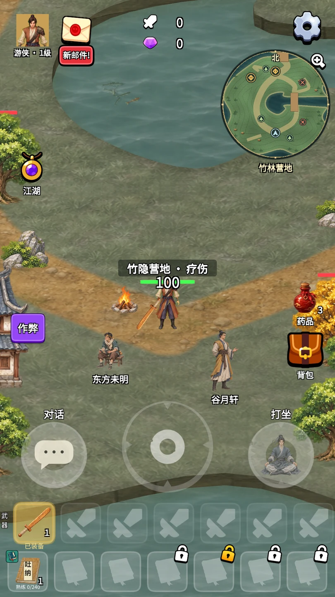
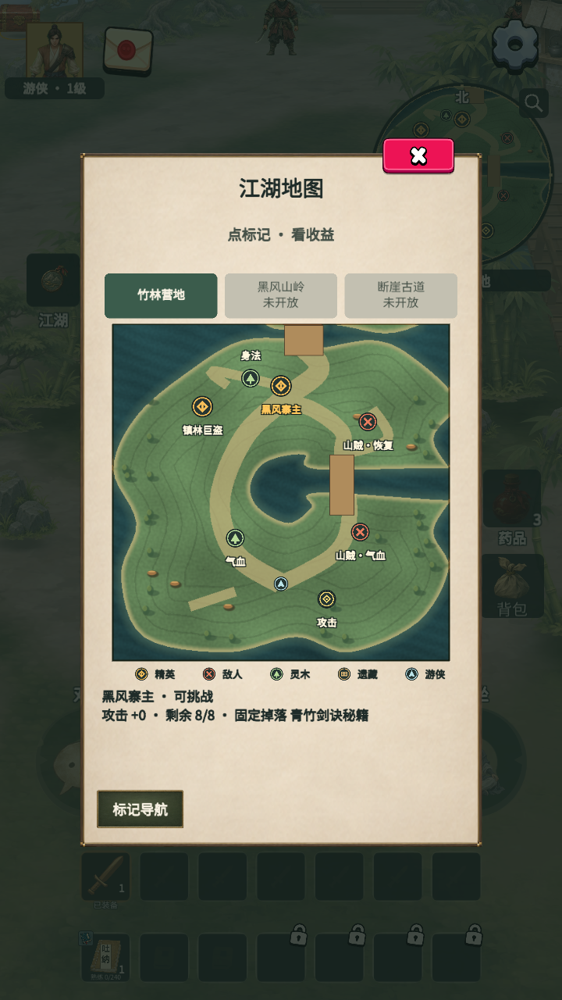
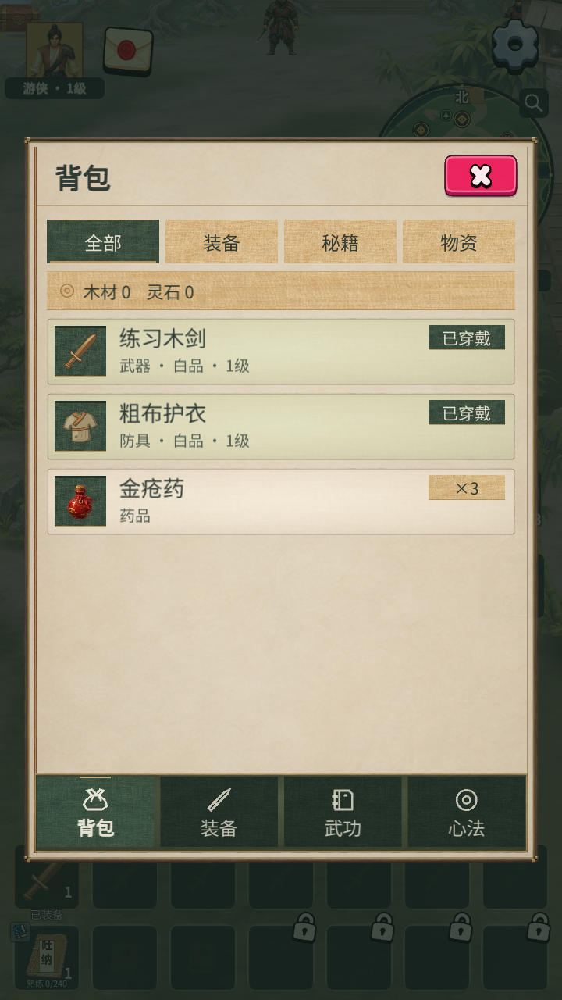
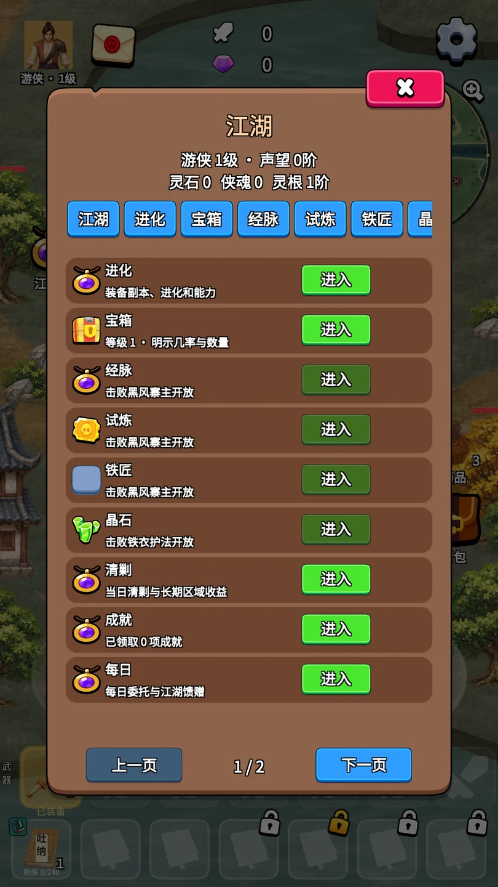

个人 AI 游戏实践 / 安卓原型
竹隐江湖2D.
竖屏武侠 RPG 原型。在竹林营地辨认路线与目标，把地图探索、武器装备和武学熟练度串成一套可上手的成长体验。
实机截图








截图采自 MuMu 安卓模拟器运行的 Unity APK。包内版本 0.11.13（构建号 15），原文件名标记为 0.2.13。
怎样用 AI 推进这类游戏原型
- 把玩法拆成可试玩的任务。从营地出发，先让玩家能移动、辨认地图目标，再接入装备栏与属性反馈。给 AI 的需求写清输入、状态变化和界面反馈，每次交付一段能检查的流程。
- 把内容和规则一起描述。用点位、装备属性、武学熟练度和解锁条件组织设计，让 AI 辅助梳理配置字段、生成初稿与查找遗漏。由策划确认数值和玩家看到的反馈。
- 用安卓包回验。在竖屏设备逐个打开地图、背包和成长菜单，检查信息是否可读、入口是否可达，再用实际画面给下一轮修改提供依据。
以上是结合原型说明的 AI 协作方法。现有 APK 可验证交互与界面，历史工具和具体素材的生成过程缺少制作记录。